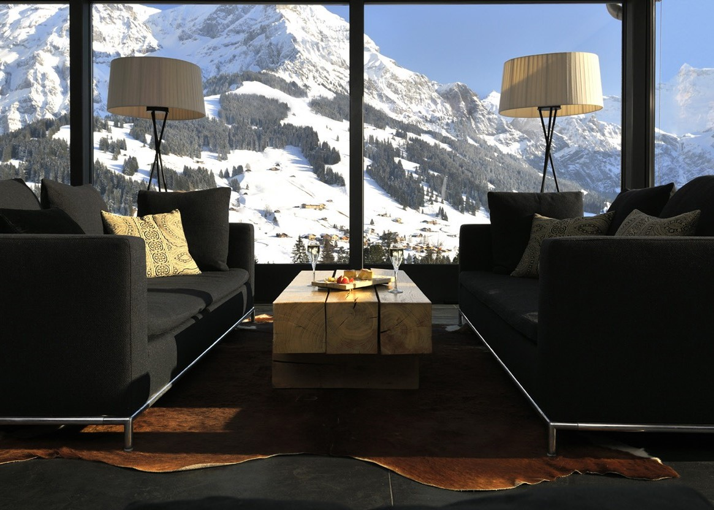
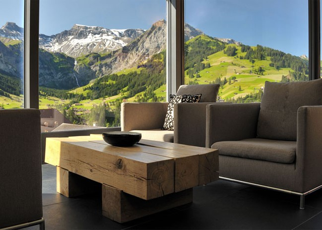
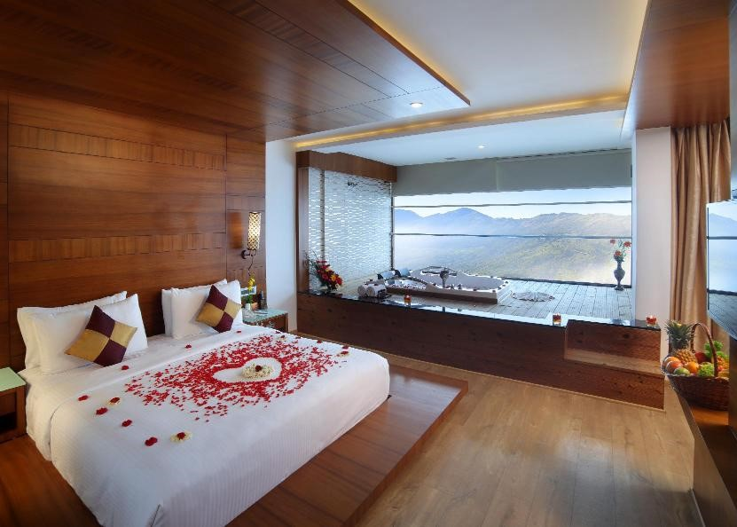
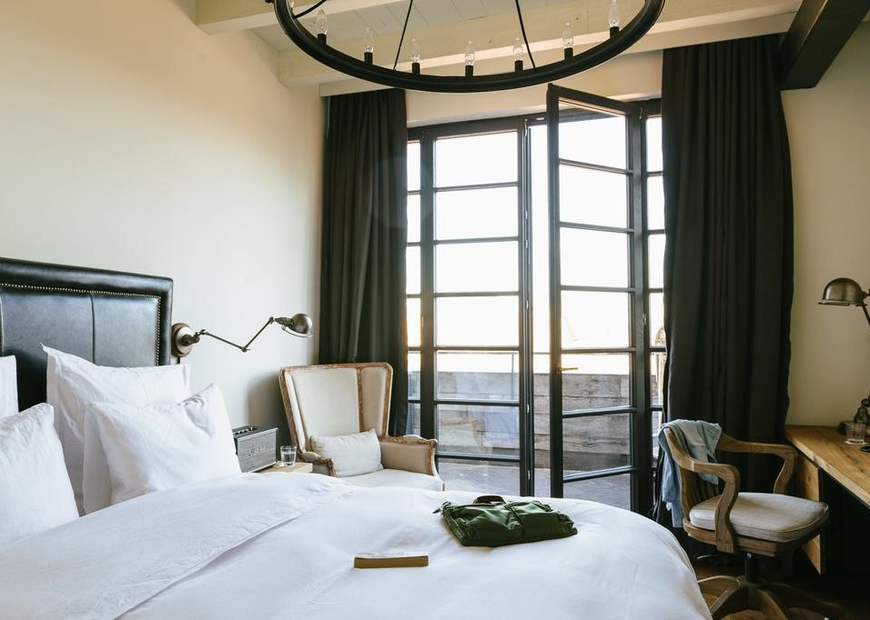
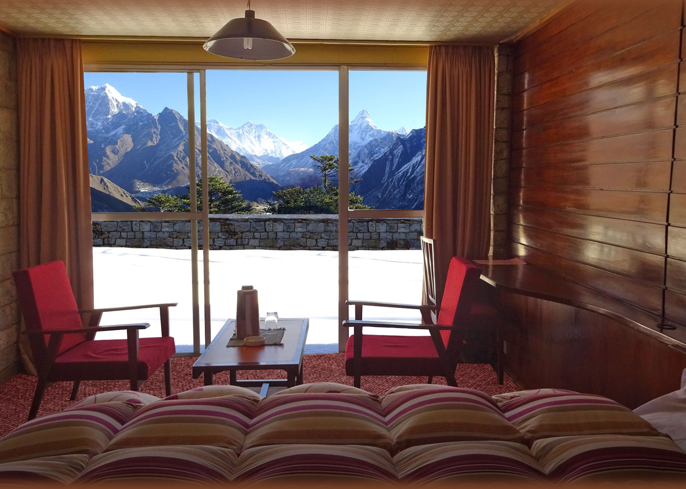
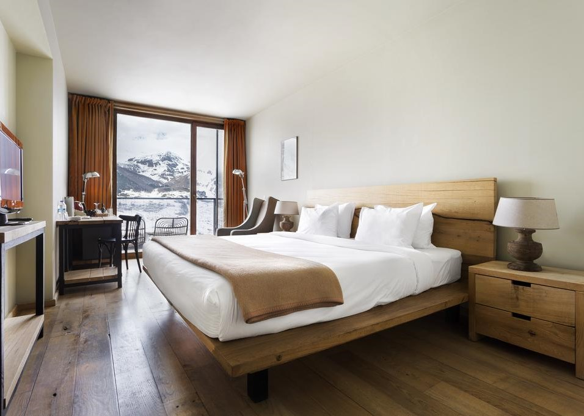
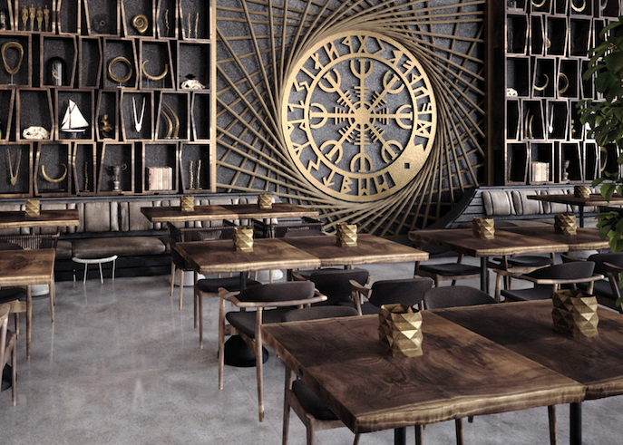
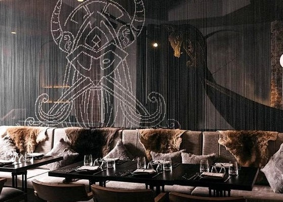
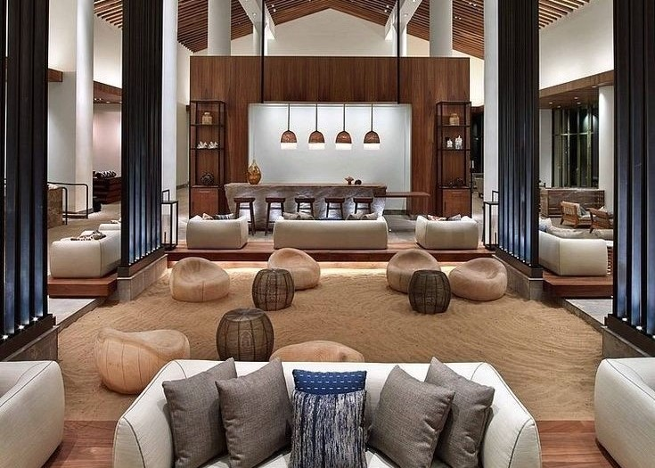

Luxus Lakosztály  A lakosztály a Kebnekaise déli csúcsának legszebb részére lát rá. Az üvegpanorámán keresztül érezhetjük a hegy közelségét, gyönyörködhetünk a igéző látványabáan, a luxus kandalló által felmelegített lakosztályunkból. Superior Lakosztály  Helagsfjället lejtői festői képet adnak minden évszakban. A hatalmas üvegfelületeken keresztül mesés kilátás nyílik, minden napszakban. Lakosztály  Beépített pezsgőfürdő és a Oksskolten csúcsra néző lakosztály várja a romantikázni és pihenni vágyó párokat. A lakosztály 57 m2 teljes területe a pihenést és kényelmet szolgálja. Szoba  Troms megyére néző Skandináv stílusú szoba a kényelem jegyében lett kialakítva. Üzleti útra megfelelő választás lehet. A szoba dolgozórészzel és tárgyalásra alkalmas előtérrel van ellátva. Minden üzletember és üzletasszony álma lehet. Superior Szoba  Jiehkkevárri csúra és Lyngenre néző Superior szoba , közvetlenül a hegy lábánál. Minden természetjáró és hegymászó és festőművész álma. A korai órákban a hegy lejtőin megcsillanó nap fénye csodásan rajzolja meg a gleccserek vonulatait. Minden sugár aranyló folyóként ömlik végig a hegy lábáig. Skandináv Szoba  Ízig-vérig a Skandináv stílus tölti be a szobát. Letisztult , konfortos szoba kiváló választás azoknak akik, rajonganak a Skandináv életérzésért. A berendezés nayg része a Fjordok lábánál található fák felldolgozásából származik. Magában hordozza a Fjordok energiáját. Odin étterem  Odin a skandináv és germán mitológia legfontosabb istene és a panteon legidősebb, leghatalmasabb, legbölcsebb tagja. Nevével fémjelzett éttermünkben isteni bánásmódban és kiszolgálásban lehet része.A tradicionális Skandináv ételeket és italokat kóstolhat meg. Thor étterem  Odin fia Thor a skandináv és germán mitológia egyik legfontosabb alakja, a mennydörgés, a vihar, villámok és a termékenység istene. Éttermünk aézrt kapta ezt a nevet, mert a Skandináv vidék gazdag étel és italválasztéka itt öszpontosul egy igazán modern formában. Loki Bár  Odin másik fia Loki, (vagy Loke, vitatott jelentése: „befejező”) a skandináv mitológia alakja, germán tűzisten, tréfacsináló. A tréfa istenéről elnevezett bárunkban, rengeteg Skandináv italt és egyéb fonomságokat fogyaszthat. Garantáltan jó szórakozást biztosít a bárban fellépő megannyi zenész és humorista.